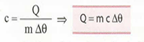

Calorimetria
Introdução
A calorimetria é a parte da física responsável pelo estudo dos fenômenos relacionados as trocas de energia térmica.
Energia térmica
A energia térmica de um corpo é o somatório das energias de agitação das suas partículas. Ela depende da temperatura do corpo e do número de partículas nele existentes.
Calor
É energia térmica em trânsito de um corpo para outro ou de uma parte para outra de um mesmo corpo, trânsito este provocado por uma diferença de temperaturas. Ele flui da região de maior temperatura para a de menor temperatura.

Videoaulas
Conceitos Iniciais
Exercícios resolvidos
Processos de propagação
Condução
É o processo de propagação de calor no qual a energia térmica passa de partícula para partícula de um meio.
Convecção
É o processo de propagação de calor no qual a energia térmica muda de local, acompanhando o deslocamento do próprio material aquecido.
Radiação
É o processo de propagação de energia na forma de ondas eletromagnéticas. Ao serem absorvidas, essas ondas se transformam em energia térmica.
Videoaula
Processos de propagação de calor
Transferência de calor
No regime permanente, o fluxo térmico depende de quatro fatores: da área (A) da secção transversal da barra, e seu comprimento (L), da diferença de temperaturas (Δθ) dos meios a e b e do material que é feita a barra (K).
Videoaula
Transferência de calor
Calor sensível
Calor sensível é o calor que, recebido ou cedido por um corpo, provoca nele uma variação de temperatura.
Capacidade térmica
A capacidade térmica ( C ) de um corpo indica a quantidade de calor que ele precisa receber ou ceder para que sua temperatura varie uma unidade.
Videoaulas
Capacidade térmica
Exercícios resolvidos
Calor específico
O calor específico ( c ) indica a quantidade de calor que cada unidade de massa do corpo precisa receber ou ceder para que sua temperatura varie uma unidade.
Sistema termicamente isolado
Um sistema físico é termicamente isolado quando não existe troca de calor entre seus componentes e o meio externo. Ou seja, As trocas de calor ocorrem apenas entre os seus integrantes. É importante observar que, na prática, por melhor que seja o isolamento térmico de um sistema, ele sempre troca calor com o meio externo.
Potência Térmica - Videoaula
Equivalente em água
O equivalente em água de um corpo é a massa E de água que possui capacidade térmica igual à do corpo considerado, podendo substituí-lo no equacionamento das quantidades de calor trocadas.
Calorímetro
É o recipiente usado para realizar a mistura térmica de dois ou mais corpos, principalmente quando um deles está no estado líquido. Ele possui aparatos que permitem obter, de forma direta ou indireta, o valor das quantidades de calor trocadas entre os corpos.

Calor latente
A denominação calor latente é dada a energia térmica que se transforma em energia potencial de agregação. Essa transformação altera o arranjo físico das partículas do sistema e provoca uma mudança de estado – por exemplo, de sólido para líquido (fusão) – sem, no entanto, alterar a temperatura.
Videoaulas
Calor latente
Exercícios resolvidos
Estados físicos de agregação
-
Estado sólido:
- Forma e volume fixos.
- Energia cinética baixa.
- Alta agregação.
-
Estado líquido:
- Forma variável e volume fixo.
- Energia cinética intermediária.
- Agregação intermediária.
-
Estado gasoso:
- Forma e volume variáveis.
- Energia cinética alta.
- Agregação baixa.
Mudanças de estado físico
- Fusão: É a passagem do estado sólido para o estado líquido.
- Solidificação: É a passagem do estado líquido para o estado sólido.
- Vaporização: É a passagem do estado líquido para o estado de vapor ou estado gasoso.
- Liquefação: É a passagem do estado gasoso para o estado líquido.
- Condensação: É a passagem do estado de vapor para o estado líquido.
- Sublimação: É a passagem do estado sólido para o gasoso, sem que determinada substância passe pela fase intermediária, a líquida. A transformação inversa também é denominada sublimação.